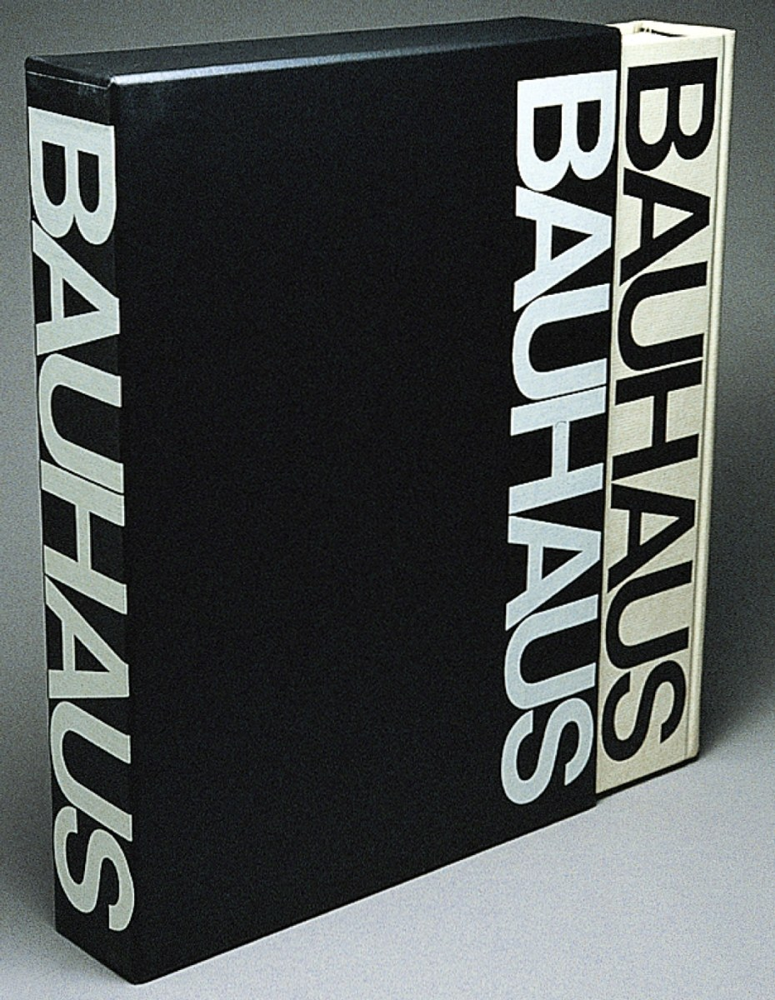

Cooper launched her career as a designer for print, and her work in that medium includes over 500 books, more than a hundred of them recognized with awards. She designed the now-classic 1969 MIT Press book, Bauhaus, about the modernist German design school. It’s her best-known book, closely followed in 1972 by Learning from Las Vegas, a manifesto of post-modernist design.
